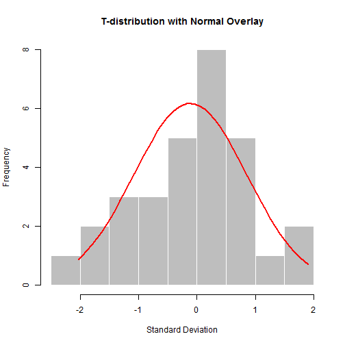

Features
- Displays Histogram of T distribution
- Allows user to alter degrees of freedom and number of observations.
- Displays normal curve overlay to help visualize difference between the two distributions.
Robert Stober
Data Products Course Project

